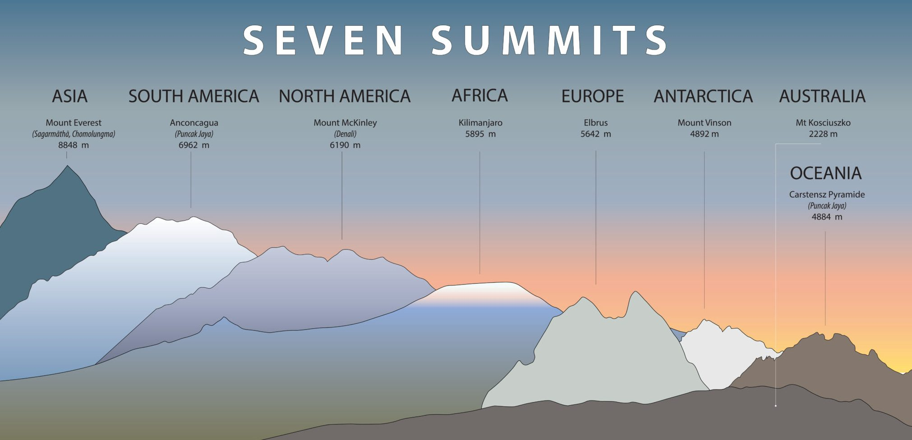

KORONA ZIEMI
KORONA ZIEMI
Korona Ziemi - najwyższe szczyty kontynentów
Mianem Korony Świata zwykło określać się najwyższe szczyty kontynentów istniejących na Ziemi. Nazwa wywodzi się z języka angielskiego, gdzie Korona Ziemi oznacza „Siedem szczytów”. Choć określenie to zdaje się jednak sugerować co innego, w praktyce najwyższych szczytów kontynentów jest nie siedem, a dziewięć.
W skład Korony Ziemi wchodzą:
- Azja: Mount Everest (8848 m n.p.m.)
- Ameryka Południowa: Aconcagua (6961 m n.p.m.)
- Ameryka Północna: Denali (McKinley) (6195 m n.p.m.)
- Afryka: Kilimandżaro (5895 m n.p.m.)
- Europa:
- (według Messnera, Bassa i środowiska wspinaczkowego) Elbrus (5642 m n.p.m.)
- (według niektórych naukowców) Mont Blanc (4810 m n.p.m.)
- Australia lub Australia i Oceania:
- (według Bassa) Australia: Góra Kościuszki (2230 m n.p.m.)
- (według Messnera) Australia i Oceania: Puncak Jaya (4884 m n.p.m.)
- Antarktyda: Masyw Vinsona (4892 m n.p.m.)
Przegląd siedmiu szczytów:
Zdobycie Korony Ziemi to projekt dla tych, którzy nie boją się poświęcić wiele czasu, sił i pieniędzy. Najwyższe szczyty kontynentów wymagają żelaznego przygotowania kondycyjnego, a także sprzętowego. Tu już nie wystarczą zwykłe buty trekkingowe i standardowa górska odzież. Potrzebne są specjalistyczne ubrania, które dzielnie stawią czoła ekstremalnym warunkom. Mimo że korona świata wymaga bardzo wiele od osób planujących jej zdobycie, co roku znajdują się zapaleńcy, którzy podejmują wyzwanie.
Pierwszą osobą, która weszła na wszystkie najwyższe szczyty na kontynentach był Richard Bass. Swój cel osiągnął w 1985 r. Korona świata w wersji Messnera została natomiast zdobyta po raz pierwszy w 1986 r. przez Pata Morrowa. Jego wyczyn powtórzył też następnie sam Messner. Ten alpinista był też pierwszym, który zdobył koronę bez wspomagania tlenem z butli. Japonka Junko Tabei jest natomiast pierwszą kobietą, która weszła na wszystkie szczyty należące do Korony. Najmłodszym zdobywcą jest natomiast Jordan Romero, który Koronę skompletował w 2011 r. w wieku 15 lat. Pierwsi polscy zdobywcy Korony Ziemi to z kolei Leszek Cichy (w 1998 r.) oraz Anna Czerwińska (w 2000 r.).
